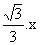
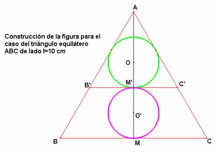

Solución de F. Damián Aranda Ballesteros profesor de Matemáticas del IES Blas Infante en Córdoba (17 de febrero de 2003)
Problema 78.-
1.- Construir la siguiente figura donde el triángulo es equilátero y las dos
circunferencias tienen el mismo radio.
2.- ¿Cuanto mide el radio de la circunferencia si el lado del triángulo mide 10 cm?
Análisis.-
Analizando la figura deducimos que al trazar la tangente común por el punto de contacto de las dos circunferencias obtenemos el triángulo equilátero AB’C’ de lado x.
En este triángulo equilátero de lado x, la circunferencia de
centro O sería la inscrita al mismo, y por tanto, su diámetro será igual al
valor 
De este modo, la altura AM del triángulo ABC de lado l, sería por un lado igual a y, por otro lado igual a MM’+AM’= + =
En definitiva, se daría la siguiente relación: = de donde deducimos que x = 3/5∙l
En concreto, si el lado del triángulo ABC mide 10 cm, entonces el radio de ambas circunferencias vale cm
Construcción.-
Dado un triángulo equilátero ABC de lado l, determinamos el triángulo semejante AB’C’ de razón 3/5. Construimos su circunferencia inscrita y después, obtenemos la imagen por la simetría axial de la circunferencia inscrita respecto del lado B’C’ consiguiendo así la segunda circunferencia solicitada.
